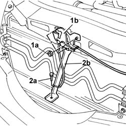
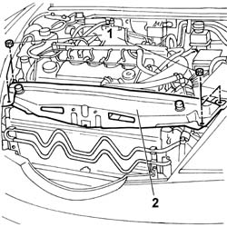
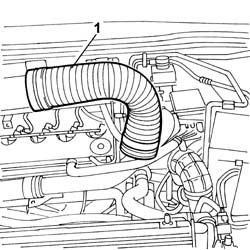
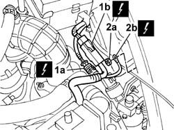
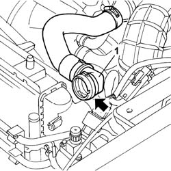
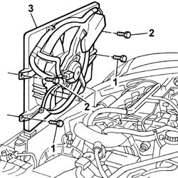

1088E10 Radiator cooling FAN - R.R.
- Path
- Procedures > 10 ENGINE > 1088 ENGINE COOLING > 1088E COOLANT TEMPERATURE CONTROL DEVICES > 1088E10 Radiator cooling FAN - R.R.
- Kind
- repair procedure (removal / refitting; the operation number is the code)
- Applies to
- engines: 2.4 JTD 10V; all production periods
- Interactive page
- https://sloeber94.github.io/elrnDB-lThss/en/#/76232
Applies to: engines: 2.4 JTD 10V; all production periods
 Removing
Removing
 Refitting
Refitting- Position the vehicle on a lift.
See in Op. 7055B54 PROTECTION/GUARD under engine - R.R.
1. Undo the fixing nuts (1a) and remove the bonnet lock (1b) from its housing in the crossmember.
2. Undo the lower nut (2a) and remove the lock reinforcement bracket (2b).

Applies to: engines: 2.4 JTD 10V; all production periods
1. Undo the fixing nuts.
2. Remove the upper front crossmember.

Applies to: engines: 2.4 JTD 10V; all production periods
1. Remove the cold air intake from the connector on the air filter.

Applies to: engines: 2.4 JTD 10V; all production periods
1. Disconnect the electrical connections (1a) and (1b) for the engine cables/fan-radiator cables coupling.
2. Undo the nut (2a) and disconnect the earth lead (2b) from the bodyshell.
 | Description | Connector |
|---|---|---|
1 | Front/radiator coupling | D009A |
| Description | Connector |
|---|---|---|
1 | Front/radiator coupling | D009B |
| Description | Connector |
|---|---|---|
2b | Right front earth | C011 |

Applies to: engines: 2.4 JTD 10V; all production periods
- Position a suitable container for collecting the engine coolant at the outlet of the upper pipe and the radiator.
1. Disconnect the upper radiator pipe.
- Remove the container for collecting the engine coolant and seal the housing in the radiator.

Applies to: engines: 2.4 JTD 10V; all production periods
See in Op. 1048A10 AIR FILTER CASING - R.R.
- Raise the lift.
1. Undo the lower bolts fixing the fan to the radiator assembly.
- Lower the lift.
2. Undo the upper bolts fixing the fan to the radiator assembly.
3. Remove the fan assembly from the upper part of the engine compartment.

Applies to: engines: 2.4 JTD 10V; all production periods
Refitting
Removing- Fit the fan assembly in the special housing.
- tighten the upper fixing bolts, raise the lift and tighten the lower fixing bolts.
See in Op. 1048A10 AIR FILTER CASING - R.R.
- Connect the uppper engine coolant pipe to the radiator.
- Connect the electrical connections for the engine cables/fan-radiator cables coupling.
| Description | Connector |
|---|---|---|
. | Front/radiator coupling | D009A |
| Description | Connector |
|---|---|---|
. | Front/radiator coupling | D009B |
- Connect the earth lead to the bodyshell and secure it using the fixing nut.
| Description | Connector |
|---|---|---|
. | Right front earth | C011 |
- Fit the cold air intake to the air filter connector.
- Fit the upper front crossmember and tighten the fixing nuts to torque.
 | Value - daNm | Fastening | Component | Ø |
|---|---|---|---|---|
. | 0.6 | Bolts | FRONT WING CROSSMEMBER HEADLAMP HOUSINGS | M6 |
- Fit the bonnet lid lock complete with bracket and tighten the nuts fixing it to the upper crossmember and to the lower crossmember.
See in Op. 7055B54 PROTECTION/GUARD under engine - R.R.
- Remove the vehicle from the lift.